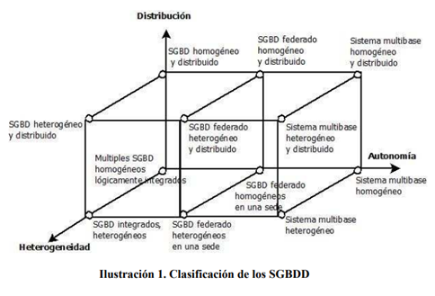

3.1 Introducción a las Bases de Datos Distribuidas
Hecho por: Ricardo Martinez Franco
3.1 Introducción a las Bases de Datos Distribuidas
Las Bases de Datos Distribuidas (BDD) son la unión de dos conceptos que, en principio, pueden parecer opuestos: los Sistemas Gestores de Bases de Datos (SGBD), y por otro lado, los sistemas en red.
los SGDB, son sistemas, con sus correspondientes aplicaciones y archivos, de gestión y almacenamiento de datos que están disponibles en un solo lugar. La tecnología de redes de computadores, por otra parte, promueve un modo de trabajo que va en contra de todo esfuerzo de centralización.
La clave para entender esto es darse cuenta de que el objetivo principal de Las Bases de Datos Distribuidas no es la centralización sino más bien la integración, lograr la integración y distribución y que ambos enfoques no pierdan su naturaleza esencial.
3.1.1 Conceptos básicos
Base de Datos (BD)
Una base de datos es un conjunto de datos relacionados entre sí. Por datos se entienden hechos conocidos que pueden registrarse y que tienen un significado implícito. Por ejemplo, considérense los nombres y números de teléfonos de personas.
Una BD tiene las siguientes propiedades implícitas:
• Una BD representa algún aspecto del mundo real, en ocasiones llamado universo del discurso. Las modificaciones del universo del discurso se reflejan en la BD.
• Una BD es un conjunto de datos lógicamente coherente, con cierto significado incoherente. Una colección aleatoria de datos no puede considerarse propiamente una BD.
• Toda BD se diseña, construye y puebla con datos para un propósito específico. Está dirigida a un grupo de usuarios y tiene ciertas aplicaciones preconcebidas que interesan a dichos usuarios.
Sistema de Gestión de BD (SGBD)
Un SGBD es un conjunto de programas que permite a los usuarios crear y mantener una BD. Por tanto, el SGBD es un sistema de software de propósito general que facilita el proceso de definir; construir y manipular BBDD para diversas aplicaciones.
Sistema de Computación Distribuido.
Es un número de elementos de procesamiento (no necesariamente homogéneos) que están interconectados por una red de computadoras y que cooperan para realizar las tareas que tienen asignadas.
Red de Computadoras.
Una red de computadoras, también llamada red de ordenadores o red informática, es un conjunto de equipos (computadoras y/o dispositivos) conectados por medio de cables, señales, ondas o cualquier otro método de transporte de datos, que comparten información (archivos), recursos (CD-ROM, impresoras, etc.) y servicios (acceso a Internet, e-mail, Chat, juegos), etc.
Bases de Datos Distribuidas.
Una Base de Datos Distribuida o BDD es una colección de datos integrados lógicamente en una BD, pero que físicamente pueden ser procesados y almacenados en varios nodos distribuidos sobre una red de ordenadores.
Sistema de Gestión de Bases de Datos Distribuido (SGBDD).
Un SGBDD es un producto software que permite el manejo de Bases de Datos Distribuidas (BDD) y hace la distribución transparente a los usuarios.
Sistema de Bases de Datos Distribuidas (SBDD).
Un SBDD es la unión entre un SGBDD y una BDD. Es decir, es un sistema en el cual múltiples sitios de BD están conectados en una red de computadoras de tal forma que, un usuario en cualquier sitio puede acceder a los datos en cualquier parte de la red exactamente como si los datos estuvieran siendo accedidos de forma local.
3.1.2 Características
Podemos caracterizar las BDD en varios aspectos:
• Los datos deben estar físicamente en más de un ordenador, es decir, los datos se encuentran almacenados en distintas sedes.
• Las sedes deben estar interconectadas mediante una red de computadoras (cada sede será un nodo de la red). Para realizar el diseño no se tendrá en cuenta la topología, tipo y rendimiento de la red, aunque estas propiedades tengan relevancia en el buen funcionamiento del sistema.
• Los datos han de estar lógicamente integrados en una única estructura o esquema lógico global común.
• Los usuarios han de tener acceso (recuperación y actualización) a los datos pertenecientes a la BDD, ya residan éstos en la misma sede (acceso local) o en otra sede (acceso remoto).
• Cada nodo o emplazamiento facilita un entorno para la ejecución de transacciones tanto locales como globales.
• En una única operación, tanto de consulta como de actualización, se puede acceder a datos que se encuentran en más de una sede sin que el usuario sepa la distribución de los mismos en las distintas sedes. Es decir, que la distribución de la información sea transparente para el usuario.
3.1.3 Ventajas y desventajas
Entre las ventajas potenciales de los sistemas de BDD se encuentran las siguientes:
• La naturaleza distribuida de algunas aplicaciones de bases de datos. Muchas de estas aplicaciones están distribuidas naturalmente en diferentes lugares. Es natural que las bases de datos empleadas en tales aplicaciones estén distribuidas en esos lugares.
• Mayor fiabilidad y disponibilidad. La fiabilidad se define a grandes rasgos como la probabilidad de que un sistema esté en funciones en un momento determinado. En un sistema centralizado, el fallo de un solo sitio hace que el sistema completo deje de estar disponible para todos los usuarios.
• Posibilidad de compartir los datos al tiempo que se mantiene un cierto grado de control local. En algunos tipos de Sistemas de Bases de Datos Distribuidas (SBDD), es posible controlar los datos y el software localmente en cada sitio. Sin embargo, los usuarios de otros sitios remotos pueden tener acceso a ciertos datos a través del software del SGBDD. Esto hace viable poder compartir de forma controlada los datos en todo el sistema distribuido.
• Mejor rendimiento. Cuando una base de datos grande está distribuida en múltiples sitios, hay bases de datos más pequeñas en cada uno de éstos. En el caso de transacciones que impliquen acceso a más de un sitio, el procesamiento en los diferentes sitios puede efectuarse en paralelo, reduciéndose así el tiempo de respuesta.
• Plataforma autónoma. Dado que las aplicaciones y bases de datos no residen en las mismas máquinas, no hay ninguna razón particular para residir en el mismo tipo de máquina.
• Localización transparente. Esto significa que ni las aplicaciones ni los usuarios necesitan preocuparse de dónde residen los datos o cómo se distribuyen.
• Autonomía del sitio. Las BDD permiten varias localizaciones para compartir sus datos sin ceder el control administrativo.
• Seguridad mejorada. Los componentes de la arquitectura distribuida son completamente independientes unos de otros, lo que significa que cada sitio puede mantenerse de forma independiente.
Desventajas de las BDD.
• Seguridad. Esta característica también aparece en el apartado de ventajas, dado que tiene dos caras, debido a que puede ser difícil saber y controlar quién está accediendo a una base de datos mediante un enlace de BD. Las cuentas a las cuales se conecta un enlace de BD no debe dar más derechos de acceso que los absolutamente necesarios. El mantenimiento de las cuentas en sí mismas puede convertirse en un trabajo de tiempo completo.
• Coherencia de los datos. Si existen varias réplicas una de las tareas de mayor esfuerzo será garantizar la coherencia de datos. Esta responsabilidad es compartida entre los diseñadores, desarrolladores y administradores de bases de datos.
• Administración de transacciones. Si se necesita hacer un número de operaciones, pero tenemos la información en varios sitios replicada, debemos entender que el conjunto de operaciones debe ser realizado para cada sitio replicado.
• Seguimiento. La carga de trabajo de un DBA en un entorno distribuido puede ser considerable. Si los problemas en un entorno distribuido se dejan sin resolver, puede ser tan difícil corregirlos que incluso sea más fácil recargar los datos desde el principio que tratar de solucionar errores específicos.
• Recuperación. Si una base de datos que forma parte de un entorno distribuido falla, el proceso de recuperación no sólo debe garantizar la restauración completa de los datos locales, sino también la restauración de los datos distribuidos, tales como las transacciones e instancias suspendidas.
• Rendimiento. Varios factores pueden afectar el rendimiento en una base de datos distribuida. Si la aplicación referencia datos desde un enlace de base de datos, el rendimiento de la red tendrá una influencia directa en el funcionamiento de la BDD. Los componentes de replicación que utilizan técnicas de almacenamiento y reenvío, tales como instantáneas y maestros de replicación, también tendrán su coste en el rendimiento global del sistema. El almacenamiento y la transmisión de operaciones impacta en el rendimiento general del sistema, y se debe tener en cuenta lo que esto significa cuando se especifican los requisitos de hardware.
3.1.4 Clasificación de los SGBDD
Esta clasificación se realiza en base a tres características: la distribución, la autonomía y la heterogeneidad del sistema local.
Distribución
Los datos pueden ser distribuidos entre múltiples bases de datos. Estas bases de datos pueden estar almacenadas en un único sistema informático o en varios, distribuidos geográficamente, pero interconectados por un sistema de comunicación. Los datos pueden ser distribuidos entre múltiples bases de datos de diferentes maneras. Estos incluyen, en términos relacionales, particiones de base de datos verticales y horizontales.
Además, pueden mantenerse varias copias de todo o parte de los datos. Estas copias no tienen por qué tener una estructura idéntica. Algunos de los beneficios de la distribución de los datos son bien conocidos, tales como una mayor disponibilidad y fiabilidad de la información, así como una mejora en los tiempos de acceso.
Autonomía
Se refiere a la distribución del control, no de los datos. Indica el grado en el que los SGBDs pueden actuar independientemente y es función de factores tales como el nivel de intercambio de información entre los componentes del sistema, la ejecución independiente de transacciones, la tolerancia a modificaciones respectivas en los datos, etc
Para lograr la independencia entre bases de datos que componen un sistema distribuido, es necesario considerar los tipos de autonomía descritos por:
• Autonomía de diseño: La capacidad de que cada nodo de la base de datos decida los aspectos relacionados con su diseño. Es decir, las personas involucradas son libres de decidir cualquier particularidad e incluso decidir qué SGBD utilizar. Los aspectos a considerar en la autonomía de diseño son:
El universo de datos relevante para el sistema
• La representación (modelo de datos, lenguaje de consultas) y el nombrado de los datos
• La conceptualización o interpretación semántica de los datos (heterogeneidad semántica)
• Restricciones usadas para administrar los datos
• La funcionalidad del sistema
• La asociación y compartición con otros sistemas
• La implementación (por ejemplo: registros y estructuras de archivos).
• Autonomía de comunicación: es la habilidad de que un nodo decida comunicarse o no con otro componente de una misma federación
• Autonomía de ejecución: es la habilidad de un nodo para ejecutar operaciones locales sin la interferencia de operaciones externas, en el orden en que el nodo lo decida.
• Autonomía de asociación: cada nodo cuánto y cuándo puede compartir su funcionalidad y recursos con otros componentes, inclusive la capacidad de asociarse o retirarse de una o más federaciones.
Heterogeneidad
La heterogeneidad puede referirse a diferentes aspectos, desde diferencias hardware o en los protocoles de red, hasta variaciones en los SGBDs propiamente (modelos de datos, lenguaje de manipulación de datos, protocolos de gestión de transacciones, …).

A continuación, se explican las diferentes clasificaciones a partir de las mencionadas alternativas en las arquitecturas de los SGBDD.
• La clase con múltiples SGBDs homogéneos lógicamente integrados. Si no hay distribución ni heterogeneidad el sistema es un conjunto de múltiples SGBDs que están lógicamente integrados.
• Al introducir heterogeneidad (Clase con SGBDs heterogéneos integrados y SGBDs distribuidos heterogéneos) resultan múltiples SGBDs pero con una visión integral para el usuario.
• Al introducir distribución de los datos (SGBD homogéneo y distribuido), el caso se generaliza. Esto es lo más interesante, la distribución de los datos más allá de la heterogeneidad y la autonomía de los SGBDs.
• En un grado intermedio de autonomía están los denominados sistemas federados (SGBD federado heterogéneo en una sede, SGBD federado heterogéneo y distribuido y SGBD federado homogéneo y distribuido), de forma que existe una cooperación entre los SGBDs implicados en la ejecución de las solicitudes de usuarios a los datos de la BDD.
• Si la autonomía es total (sistema multibase heterogéneo, sistema multibase heterogéneo y distribuido y sistema multibase homogéneo y distribuido) se obtienen sistemas de bases de datos múltiples (SMBD).
• Sin la heterogeneidad (sistemas multibase homogéneos y distribuidos) o distribución (multibase heterogéneo) un sistema multibase es una colección de BDs autónomas interconectadas.
• Si la BD está distribuida (sistema multibase heterogéneo y distribuido, sistema multibase homogéneo distribuido) resulta un sistema gestor multibase distribuido que requiere una gestión bastante diferente de la de un SGBDD.
Bibliografia:
Martín, L. M. (2010). Diseño y Construcción de Bases de . Universidad Carlos III de Madrid .
Ortiz, P. A. (s.f.). TRANSACCIONES EN . Base de datos distribuidas (pág. 20). Universidad Autónoma Metropolitana.